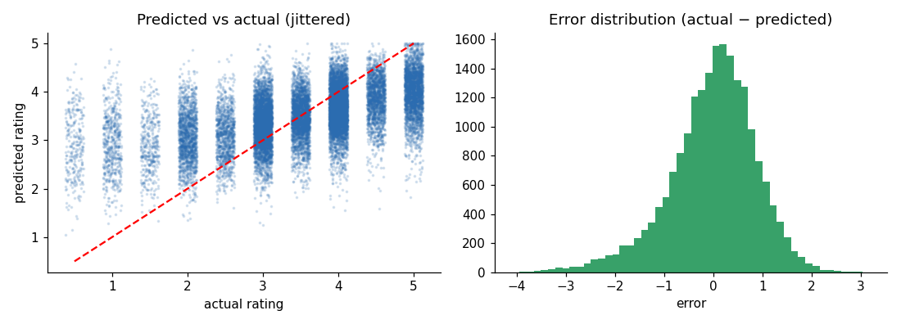
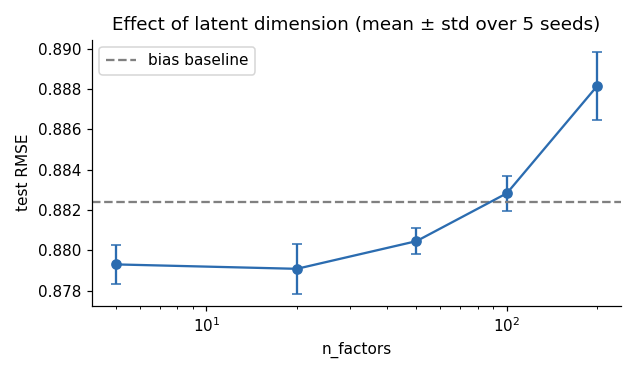

ACM Workshop · Recommender Systems · Day 1 · 14:15–15:45
Train SVD → predict → evaluate → open the model → Top-N → experiment
Lab3_Matrix_Factorization_SVD.ipynb · main technical deliverable of Day 1from surprise import Dataset, Reader, SVD, BaselineOnly, accuracy
import surprise; print(surprise.__version__) # 1.1.5surprise? pip install "numpy<2" scikit-surprise or use Colab.train.csv / test.csv as Labs 1–2reader = Reader(rating_scale=(0.5, 5.0)) # NOT (1, 5) — see Lab 1!
data = Dataset.load_from_df(train[["userId","movieId","rating"]], reader)
trainset = data.build_full_trainset()
testset = list(test[["userId","movieId","rating"]].itertuples(index=False, name=None))users: 610 | items: 8983 | ratings: 80668
global mean μ: 3.5026
first test tuple (uid, iid, true rating): (432, 77866, 4.5)to_inner_uid/to_raw_iid convert back(user, item, true rating)run("random (NormalPredictor)", NormalPredictor())
run("baseline μ + b_u + b_i", BaselineOnly()) RMSE MAE
random (NormalPredictor) 1.4255 1.1413
baseline μ + b_u + b_i 0.8824 0.6769svd = SVD(n_factors=50, n_epochs=20, lr_all=0.005, reg_all=0.02, random_state=42)
svd.fit(trainset)
predictions = svd.test(testset)
print(predictions[0])user: 432 item: 77866 r_ui = 4.50 est = 3.28 {'was_impossible': False}| parameter | role | maths |
|---|---|---|
n_factors | latent dimension | k in pu, qi ∈ ℝk |
n_epochs | SGD passes over the ratings | #updates |
lr_all | learning rate | step size γ |
reg_all | L2 regularisation | λ |
userId movieId actual predicted title
535 2539 3.0 2.54 Analyze This (1999)
274 55765 4.0 3.56 American Gangster (2007)
182 899 5.0 4.00 Singin' in the Rain (1952)
391 111 5.0 4.36 Taxi Driver (1976)
217 1198 5.0 3.41 Raiders of the Lost Ark (1981)
accuracy.rmse(predictions); accuracy.mae(predictions) RMSE MAE
random 1.4255 1.1413
baseline μ + b_u + b_i 0.8824 0.6769
SVD (50 factors) 0.8808 0.6739
user-KNN (k=40, Pearson) 0.9042 0.6863
item-KNN (k=40, cosine) 0.9141 0.6961Our Lab-2 NumPy CF: user 0.8871 · item 0.8756 (covers 75% of test pairs).
print(svd.pu.shape, svd.qi.shape) # P: users×k, Q: items×k
manual = μ + svd.bu[iu] + svd.bi[ii] + svd.pu[iu] @ svd.qi[ii]P (users×factors): (610, 50) | Q (items×factors): (8983, 50)
Parameters learned: 489,243 vs the full matrix: 5,479,630
user 10 × 'Toy Story (1995)': by hand = 3.5221 svd.predict = 3.5221
μ=3.50 b_u=-0.45 b_i=+0.39 p_u·q_i=+0.08Shawshank Redemption +0.90
Casablanca +0.84
Dr. Strangelove +0.83
Rear Window +0.83
Amélie +0.77Judge Dredd −0.79
The Nutty Professor −0.77
Ace Ventura 2 −0.67
Mission: Impossible II −0.66
Charlie's Angels −0.62Saving Private Ryan 0.53
Star Wars V 0.52
Raiders of the Lost Ark 0.49
Almost Famous 0.47
Jurassic Park 0.45
Dr. Strangelove 0.45def top_n(algo, uid, n=5, min_pop=20):
seen = {raw item ids the user rated}
cands = [i for i in all_items if i not in seen and n_ratings[i] >= min_pop]
scored = sorted(((i, algo.predict(uid, i).est) for i in cands), key=lambda t: -t[1])[:n]User → candidates → predict each → sort → Top-N
=== user 10 (102 ratings) ===
Philadelphia Story, The (1940) 3.96
Toy Story 3 (2010) 3.89
The Apartment (1960) 3.87
Young Frankenstein (1974) 3.86
For a Few Dollars More (1965) 3.85=== user 414 (2122 ratings) ===
Saving Private Ryan 4.34
The Usual Suspects 4.34
The Departed 4.33
Apocalypse Now 4.32
Annie Hall 4.31
=== user 77 (21 ratings) ===
A Grand Day Out (W&G) 4.44
Dr. Strangelove 4.37
Amélie 4.31n_factors RMSE (mean ± std, 5 seeds)
5 0.8793 ± 0.0010
20 0.8791 ± 0.0012
50 0.8805 ± 0.0006
100 0.8828 ± 0.0009
200 0.8882 ± 0.0017
No. Flat, then rising: more capacity ⇒ more overfitting on ~130 ratings/user and ~8/movie. Differences of 0.001 are within seed noise → always repeat.
grid = {"n_factors":[20,50], "n_epochs":[20,40], "lr_all":[0.005,0.01], "reg_all":[0.02,0.05,0.1]}
gs = GridSearchCV(SVD, grid, measures=["rmse"], cv=3).fit(data) # CV on TRAIN onlybest CV RMSE: 0.8700 {n_factors: 50, n_epochs: 40, lr_all: 0.01, reg_all: 0.1}
RMSE MAE
baseline μ + b_u + b_i 0.8824 0.6769
SVD (50 factors, default) 0.8808 0.6739
SVD tuned (CV on train) 0.8621 0.6598 ← test set touched oncereg_all 0.02 → 0.1 gave the gain; every top configuration has reg 0.1 Precision@10 Recall@10
popularity (non-personalised) 0.1173 0.0860
SVD (50 factors) 0.0593 0.0384
SVD tuned 0.0537 0.0381Relevant = test rating ≥ 4 · candidates = movies with ≥ 20 training ratings · 300 users
Try: candidates with ≥ 100 ratings, or blend SVD score with popularity.
fix Q → solve every pu (ridge regression)
fix P → solve every qi
repeat — no learning rate
ALS (k=20, λ=10): test RMSE = 0.9124 MAE = 0.7038
train RMSE per sweep:
0.990 0.715 0.663 0.647 0.640 0.635 0.632 0.630
0.628 0.627 0.626 0.625 ← monotone decreaseNo bias terms ⇒ worse than biased SVD (0.881). Exercise: add bu, bi; try λ ∈ {1, 10, 30}.
def recommend(user_id, n=5):
... # your code: any model from today
recommend(10)Sample solution: top_n(best, user_id, n)["title"].tolist()